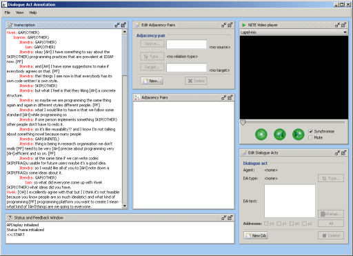

DA annotation tool's graphical user interface consists of six components: the Transcription Area, the Media Player, the Dialogue Act Editor, the Adjacency Pairs Editor, the Adjacency Pairs Area, the Status and Feedback Window. You can see these components in Figure 1.

Figure 1: Main Window